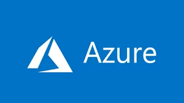

IoT- Automatizaciones
Diseñamos soluciones de Automatización e Internet de las Cosas (IoT) para que las empresas puedan conectar, monitorear y optimizar sus procesos de forma inteligente, eficiente y en tiempo real.
Herramientas y Tecnologías que utilizamos
Arduino y Raspberry Pi → ideales para prototipos y proyectos escalables de bajo costo, que permiten sensar y controlar variables en tiempo real. Node-RED y MQTT → herramientas clave para la integración de dispositivos y flujos de datos, con comunicación ligera, flexible y rápida. Sensores Industriales y PLCs → garantizan robustez y confiabilidad en entornos críticos, asegurando continuidad operativa. Plataformas en la nube (AWS IoT, Azure IoT, ThingsBoard) → permiten gestión centralizada de datos, dashboards en tiempo real y escalabilidad sin necesidad de infraestructura costosa. Bases de datos y analítica (InfluxDB, Grafana, Python) → para almacenar, visualizar y analizar datos que facilitan la toma de decisiones estratégicas.
